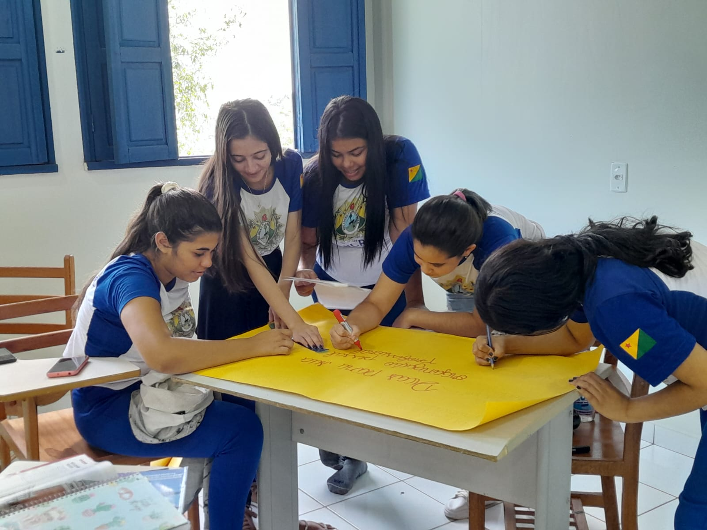

Recursos Humanos
Sobre o curso:

RH é a sigla que abrevia a palavra "Recursos Humanos", isto é o conjunto de colaboradores de uma organização. Dessa forma, a base do setor responsável são as funções de recrutamento, seleção, treinamento, remuneração e benefícios aos trabalhadores.
O que se aprende neste curso?
O curso de Recursos Humanos, também conhecido como Gestão de Recursos Humanos, é uma formação educacional que prepara os estudantes para trabalhar na área de gestão de pessoas dentro de organizações e empresas. Este curso se concentra em ensinar habilidades e conhecimentos relacionados à gestão de funcionários e equipes de trabalho. Alguns dos tópicos comuns abordados em um curso de Recursos Humanos incluem:
• Recrutamento e Seleção: Aprendizado sobre como identificar, atrair e escolher candidatos para vagas de emprego.
• Treinamento e Desenvolvimento: Desenvolvimento de habilidades em criar programas de treinamento e desenvolvimento de funcionários.
• Administração de Pessoal: Compreensão das práticas relacionadas a folha de pagamento, benefícios, licenças, e outros aspectos administrativos.
• Relações Trabalhistas: Estudo das leis e regulamentações trabalhistas, bem como resolução de conflitos e negociação sindical.
• Avaliação de Desempenho: Aprendizado sobre como avaliar o desempenho dos funcionários e fornecer feedback construtivo.
• Planejamento de Carreira: Apoio na elaboração de planos de carreira para os colaboradores.
• Gestão de Conflitos: Desenvolvimento de habilidades para lidar com conflitos no ambiente de trabalho.
• Ética Empresarial: Discussão sobre questões éticas relacionadas à gestão de recursos humanos.
• Comportamento Organizacional: Estudo do comportamento humano nas organizações e como ele afeta o desempenho.
• Gerenciamento da Cultura Organizacional: Compreensão da cultura de uma empresa e como ela influencia os funcionários.
O curso de Recursos Humanos é uma escolha popular para aqueles que desejam seguir carreiras em departamentos de RH, consultorias de recrutamento, gestão de pessoal e cargos relacionados à gestão de pessoas dentro das empresas. Ele desempenha um papel importante na promoção de um ambiente de trabalho eficaz e na maximização do potencial dos funcionários para o sucesso organizacional.